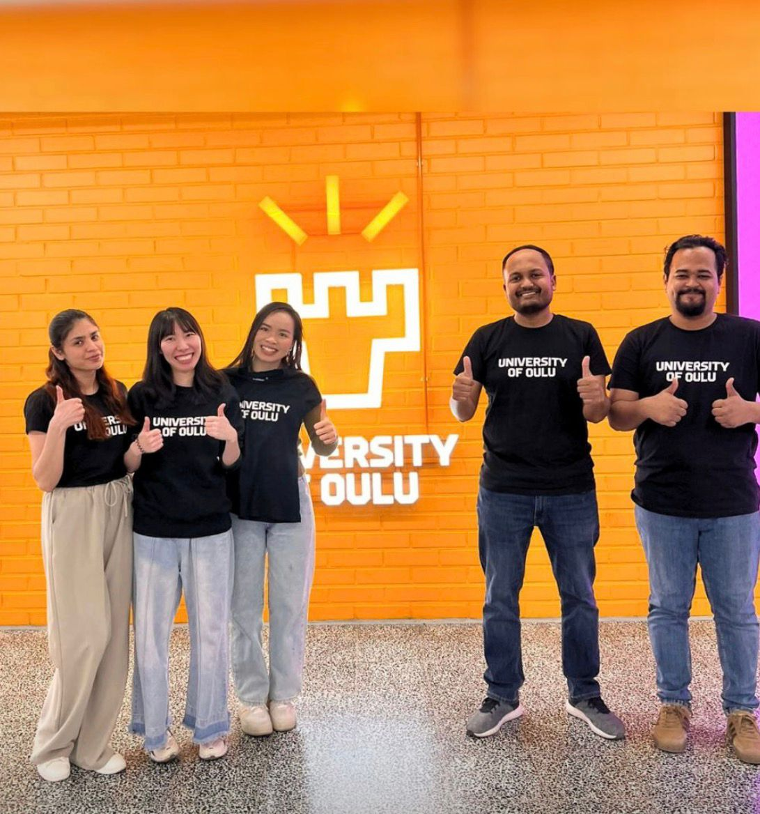
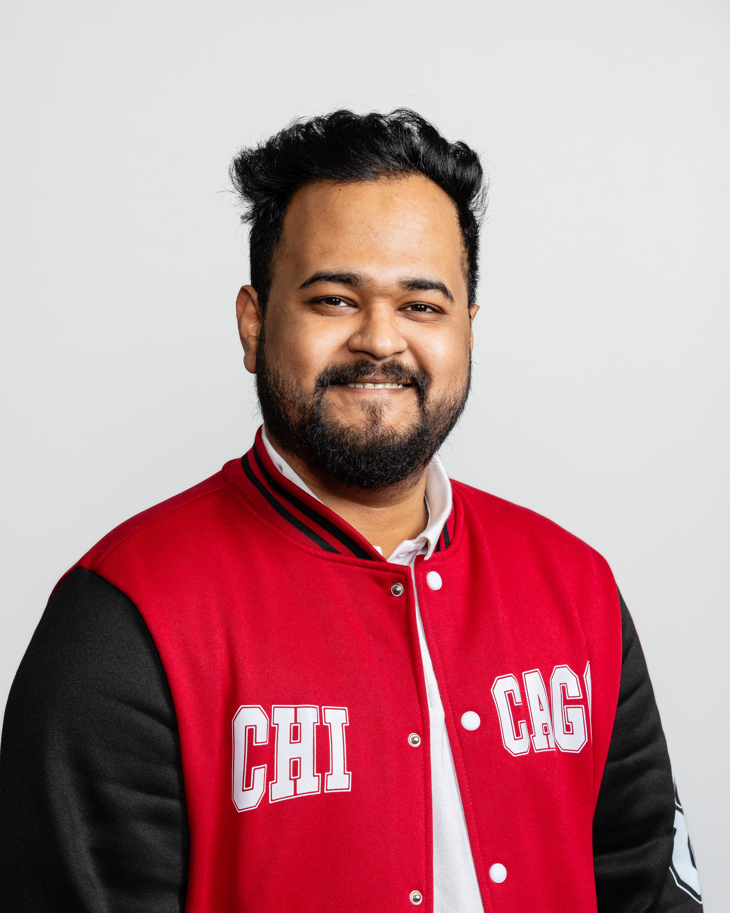

Gallery & Achievements

ERPsim National Champion

ERPsim EMEA 1st Runner-Up

Polar Bear Pitching Competition

Oyster Incubator Graduation
Transforming complex datasets into actionable insights through rigorous academic research and enterprise analytics. Bridging the gap between advanced statistical modelling and strategic business growth.

Results-driven Business Analytics professional and researcher with a distinguished MSc (GPA: 4.34/5.0, Distinction). I specialize in bridging the gap between rigorous academic research and enterprise strategy, transforming complex datasets into actionable insights.
Combining deep expertise in data analytics, econometric modelling, enterprise reporting, and SAP S/4HANA ERP, I leverage tools like Power BI, SQL, Python, and advanced statistical methodologies to drive strategic business decisions. Nationally recognized as the ERPsim Finnish National Champion 2025, I possess a proven track record of working in digital infrastructure. Eager to contribute to DPI-led solutions, data-informed decision-making, applied R&D, and AI-powered innovation.
GPA: 4.34 / 5.0 — Distinction
GPA: 3.13 / 4.0
Digital Health Project
Conducted customer sentiment analysis and competitive positioning study using PESTE framework, delivering strategic recommendations directly to SAP stakeholders — simulating end-to-end consulting workflow.
Analyzed how uncertainty in future business performance affects KPI-based employee incentive plans using Microsoft's historical revenue data. Applied Monte Carlo simulation to generate 10,000 possible future revenue growth scenarios, evaluating both employee reward likelihood and company cost risk under a threshold-target-maximum framework.
Evaluated employee reward likelihood and company cost exposure for a share-based incentive plan using Nokia's historical share price data. Utilized a scenario-based quantitative approach and Monte Carlo simulation to generate thousands of possible future market outcomes and assess the trade-off between motivation, alignment, and financial risk.
Developing specialised prompts and rubric items for domain-specific AI applications, hardening prompt development to improve model reliability, consistency, and alignment.
Developed a T-SQL solution to validate machine downtime in a simulated SAP-aligned production environment, replicating tasks typical of SAP implementation and post-go-live support.
Applied UTAUT2 behavioural theory to identify value elements influencing customer willingness to pay. Bridged academic behavioral models with actionable marketing strategy optimization.
Annotating visual data (images/videos) to train multimodal Generative AI systems, producing high-volume, accurately labelled training data for GenAI applications.
Designed architecture for Bangladesh's Digital Public Infrastructure (DPI) across health, agriculture, and education sectors, utilizing advanced scenario planning methodologies.
Contributed to the development of Bangladesh’s National Agriculture Stack by supporting interoperability initiatives, agricultural data standardization, API sandbox development, and multi-stakeholder coordination across public and private sectors.
Conducted comparative research on international AI governance frameworks and contributed to the foundational strategy development for Bangladesh’s National Artificial Intelligence Policy 2024.
Supported coordination and interoperability efforts for a flood forecasting platform designed to standardize environmental data and improve predictive disaster response systems.
Supported stakeholder coordination and foundational digital health infrastructure activities aimed at improving interoperability, healthcare accessibility, and integrated service delivery.
Contributed to a unified public health analytics dashboard through project coordination, workshop facilitation, stakeholder communication, and health data reporting support.
Assisted in stakeholder coordination, data sourcing activities, and dashboard planning for a national platform designed to monitor socioeconomic indicators and support evidence-based policymaking.
Conducted competitor analysis, supply chain assessment, and market research within Bangladesh’s cement industry to support strategic decision-making and operational insights.
Led market analysis, keyword research, and competitor assessment for an e-learning platform expansion campaign targeting the Indian market, identifying high-potential growth opportunities.
Represented the Nordic region as a student ambassador, advocating for sustainable development goals and engaging in initiatives to drive global impact.
Currently enrolled in the Oyster Incubator, actively collaborating with a team to develop and launch an innovative digital health startup project.
Mentored and guided incoming international students, facilitating their academic integration and cultural transition into the Finnish university system.
Volunteered at the globally recognized startup event in Oulu, assisting in event facilitation and ensuring a seamless, structured experience for participants and investors.
ERPsim National Champion

ERPsim EMEA 1st Runner-Up
Polar Bear Pitching Competition
Oyster Incubator Graduation
Applied Structured Literature Review to propose a tailored, localized digital agriculture framework designed to implement a sustainable and efficient data-driven ecosystem within Bangladesh.
Conducted a mixed-methods policy analysis to design an interoperable data framework for rural health systems.
Leveraged Granger Causality and time-series econometrics to evaluate the dependency between mobility restrictions and infection rates.
Currently in progress. Investigating the moderating role of gender in privacy calculus and digital financial data sharing behaviors.
Manuscript in preparation based on the comprehensive Master's thesis findings, utilizing CFA and SEM methodologies to analyze perceived benefits and control over data.
Currently in progress. Developing a multidimensional citizen readiness framework and cross-European readiness heatmap to identify how awareness, digital capability, trust, risk perception, and inclusion shape adoption of the European Digital Identity Wallet.
Currently in progress. Designing an incident-informed responsibility framework and trust-aware architecture to identify and reduce accountability gaps, automation bias, and unsafe AI autofill behavior in healthcare identity wallet systems.